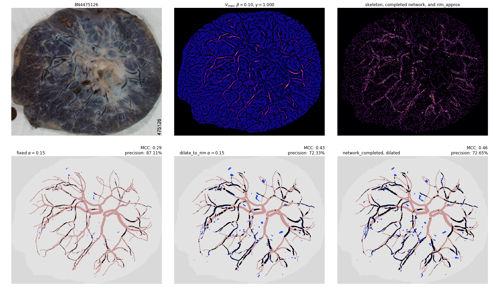
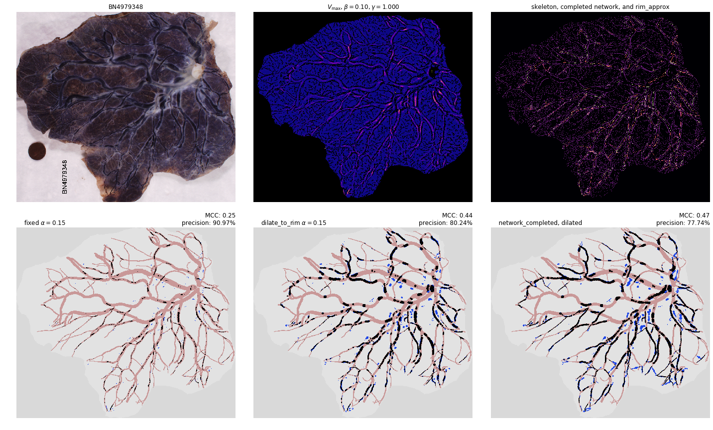

In [6]: run network_completion.py
/usr/lib/python3.7/site-packages/numpy/core/fromnumeric.py:2920: RuntimeWarning: Mean of empty slice.
out=out, **kwargs)
/usr/lib/python3.7/site-packages/numpy/core/_methods.py:85: RuntimeWarning: invalid value encountered in double_scalars
ret = ret.dtype.type(ret / rcount)
there are 873 endpoints
checking compatibility of endpoints by labels and calculating distances
removed 362717 pairs of endpoints from consideration (out of 380628 possible pairs)
removed 17102 more pairs by avoiding crossings/zero score paths
there are 1054 endpoints
checking compatibility of endpoints by labels and calculating distances
removed 522308 pairs of endpoints from consideration (out of 554931 possible pairs)
removed 31446 more pairs by avoiding crossings/zero score paths
there are 1593 endpoints
checking compatibility of endpoints by labels and calculating distances
removed 1.21647e+06 pairs of endpoints from consideration (out of 1.26803e+06 possible pairs)
removed 49678 more pairs by avoiding crossings/zero score paths
there are 1479 endpoints
checking compatibility of endpoints by labels and calculating distances
removed 1.04244e+06 pairs of endpoints from consideration (out of 1.09298e+06 possible pairs)
removed 48683 more pairs by avoiding crossings/zero score paths
there are 1295 endpoints
checking compatibility of endpoints by labels and calculating distances
removed 803263 pairs of endpoints from consideration (out of 837865 possible pairs)
removed 33174 more pairs by avoiding crossings/zero score paths
there are 917 endpoints
checking compatibility of endpoints by labels and calculating distances
removed 384348 pairs of endpoints from consideration (out of 419986 possible pairs)
removed 34649 more pairs by avoiding crossings/zero score paths
there are 1158 endpoints
checking compatibility of endpoints by labels and calculating distances
removed 643273 pairs of endpoints from consideration (out of 669903 possible pairs)
removed 25553 more pairs by avoiding crossings/zero score paths

there are 1510 endpoints
checking compatibility of endpoints by labels and calculating distances
removed 1.09899e+06 pairs of endpoints from consideration (out of 1.1393e+06 possible pairs)
removed 38718 more pairs by avoiding crossings/zero score paths
there are 1055 endpoints
checking compatibility of endpoints by labels and calculating distances
removed 529645 pairs of endpoints from consideration (out of 555985 possible pairs)
removed 25273 more pairs by avoiding crossings/zero score paths
there are 1169 endpoints
checking compatibility of endpoints by labels and calculating distances
removed 653453 pairs of endpoints from consideration (out of 682696 possible pairs)
removed 27978 more pairs by avoiding crossings/zero score paths
there are 1375 endpoints
checking compatibility of endpoints by labels and calculating distances
removed 889320 pairs of endpoints from consideration (out of 944625 possible pairs)
removed 53654 more pairs by avoiding crossings/zero score paths
there are 2245 endpoints
checking compatibility of endpoints by labels and calculating distances
removed 2.45137e+06 pairs of endpoints from consideration (out of 2.51889e+06 possible pairs)
removed 65092 more pairs by avoiding crossings/zero score paths
there are 1705 endpoints
checking compatibility of endpoints by labels and calculating distances
removed 1.39556e+06 pairs of endpoints from consideration (out of 1.45266e+06 possible pairs)
removed 55149 more pairs by avoiding crossings/zero score paths

there are 1282 endpoints
checking compatibility of endpoints by labels and calculating distances
removed 781304 pairs of endpoints from consideration (out of 821121 possible pairs)
removed 38312 more pairs by avoiding crossings/zero score paths
there are 1357 endpoints
checking compatibility of endpoints by labels and calculating distances
removed 882307 pairs of endpoints from consideration (out of 920046 possible pairs)
removed 36375 more pairs by avoiding crossings/zero score paths
there are 1636 endpoints
checking compatibility of endpoints by labels and calculating distances
removed 1.29446e+06 pairs of endpoints from consideration (out of 1.33743e+06 possible pairs)
removed 41183 more pairs by avoiding crossings/zero score paths
there are 1773 endpoints
checking compatibility of endpoints by labels and calculating distances
removed 1.51106e+06 pairs of endpoints from consideration (out of 1.57088e+06 possible pairs)
removed 57918 more pairs by avoiding crossings/zero score paths
there are 1869 endpoints
checking compatibility of endpoints by labels and calculating distances
removed 1.68112e+06 pairs of endpoints from consideration (out of 1.74565e+06 possible pairs)
removed 62295 more pairs by avoiding crossings/zero score paths
there are 2402 endpoints
checking compatibility of endpoints by labels and calculating distances
removed 2.80288e+06 pairs of endpoints from consideration (out of 2.8836e+06 possible pairs)
removed 77835 more pairs by avoiding crossings/zero score paths
there are 1410 endpoints
checking compatibility of endpoints by labels and calculating distances
removed 944314 pairs of endpoints from consideration (out of 993345 possible pairs)
removed 47446 more pairs by avoiding crossings/zero score paths

there are 1314 endpoints
checking compatibility of endpoints by labels and calculating distances
removed 817354 pairs of endpoints from consideration (out of 862641 possible pairs)
removed 43693 more pairs by avoiding crossings/zero score paths
there are 1563 endpoints
checking compatibility of endpoints by labels and calculating distances
removed 1.16903e+06 pairs of endpoints from consideration (out of 1.2207e+06 possible pairs)
removed 49785 more pairs by avoiding crossings/zero score paths
there are 1016 endpoints
checking compatibility of endpoints by labels and calculating distances
removed 494918 pairs of endpoints from consideration (out of 515620 possible pairs)
removed 19700 more pairs by avoiding crossings/zero score paths
there are 1329 endpoints
checking compatibility of endpoints by labels and calculating distances
removed 849818 pairs of endpoints from consideration (out of 882456 possible pairs)
removed 31159 more pairs by avoiding crossings/zero score paths
there are 1655 endpoints
checking compatibility of endpoints by labels and calculating distances
removed 1.31107e+06 pairs of endpoints from consideration (out of 1.36868e+06 possible pairs)
removed 55718 more pairs by avoiding crossings/zero score paths
there are 1263 endpoints
checking compatibility of endpoints by labels and calculating distances
removed 765583 pairs of endpoints from consideration (out of 796953 possible pairs)
removed 30128 more pairs by avoiding crossings/zero score paths
there are 1319 endpoints
checking compatibility of endpoints by labels and calculating distances
removed 840874 pairs of endpoints from consideration (out of 869221 possible pairs)
removed 27039 more pairs by avoiding crossings/zero score paths
there are 934 endpoints
checking compatibility of endpoints by labels and calculating distances
removed 408754 pairs of endpoints from consideration (out of 435711 possible pairs)
removed 25956 more pairs by avoiding crossings/zero score paths
there are 2215 endpoints
checking compatibility of endpoints by labels and calculating distances
removed 2.38038e+06 pairs of endpoints from consideration (out of 2.45200e+06 possible pairs)
removed 69046 more pairs by avoiding crossings/zero score paths
there are 2179 endpoints
checking compatibility of endpoints by labels and calculating distances
removed 2.28643e+06 pairs of endpoints from consideration (out of 2.37293e+06 possible pairs)
removed 83601 more pairs by avoiding crossings/zero score paths
there are 1275 endpoints
checking compatibility of endpoints by labels and calculating distances
removed 741750 pairs of endpoints from consideration (out of 812175 possible pairs)
removed 68633 more pairs by avoiding crossings/zero score paths
there are 1378 endpoints
checking compatibility of endpoints by labels and calculating distances
removed 908764 pairs of endpoints from consideration (out of 948753 possible pairs)
removed 38460 more pairs by avoiding crossings/zero score paths
there are 1044 endpoints
checking compatibility of endpoints by labels and calculating distances
removed 516415 pairs of endpoints from consideration (out of 544446 possible pairs)
removed 26907 more pairs by avoiding crossings/zero score paths
there are 1471 endpoints
checking compatibility of endpoints by labels and calculating distances
removed 1.04382e+06 pairs of endpoints from consideration (out of 1.08118e+06 possible pairs)
removed 35935 more pairs by avoiding crossings/zero score paths
there are 2345 endpoints
checking compatibility of endpoints by labels and calculating distances
removed 2.6568e+06 pairs of endpoints from consideration (out of 2.74834e+06 possible pairs)
removed 88753 more pairs by avoiding crossings/zero score paths
there are 1026 endpoints
checking compatibility of endpoints by labels and calculating distances
removed 494547 pairs of endpoints from consideration (out of 525825 possible pairs)
removed 30182 more pairs by avoiding crossings/zero score paths
there are 2177 endpoints
checking compatibility of endpoints by labels and calculating distances
removed 2.26606e+06 pairs of endpoints from consideration (out of 2.36858e+06 possible pairs)
removed 99653 more pairs by avoiding crossings/zero score paths
there are 1339 endpoints
checking compatibility of endpoints by labels and calculating distances
removed 861174 pairs of endpoints from consideration (out of 895791 possible pairs)
removed 33126 more pairs by avoiding crossings/zero score paths
there are 791 endpoints
checking compatibility of endpoints by labels and calculating distances
removed 300437 pairs of endpoints from consideration (out of 312445 possible pairs)
removed 11231 more pairs by avoiding crossings/zero score paths
there are 875 endpoints
checking compatibility of endpoints by labels and calculating distances
removed 363641 pairs of endpoints from consideration (out of 382375 possible pairs)
removed 17873 more pairs by avoiding crossings/zero score paths

there are 1247 endpoints
checking compatibility of endpoints by labels and calculating distances
removed 737256 pairs of endpoints from consideration (out of 776881 possible pairs)
removed 38278 more pairs by avoiding crossings/zero score paths
there are 1568 endpoints
checking compatibility of endpoints by labels and calculating distances
removed 1.16835e+06 pairs of endpoints from consideration (out of 1.22853e+06 possible pairs)
removed 58199 more pairs by avoiding crossings/zero score paths
there are 1400 endpoints
checking compatibility of endpoints by labels and calculating distances
removed 941222 pairs of endpoints from consideration (out of 979300 possible pairs)
removed 36635 more pairs by avoiding crossings/zero score paths

there are 812 endpoints
checking compatibility of endpoints by labels and calculating distances
removed 311887 pairs of endpoints from consideration (out of 329266 possible pairs)
removed 16621 more pairs by avoiding crossings/zero score paths
there are 827 endpoints
checking compatibility of endpoints by labels and calculating distances
removed 302249 pairs of endpoints from consideration (out of 341551 possible pairs)
removed 38156 more pairs by avoiding crossings/zero score paths
there are 1584 endpoints
checking compatibility of endpoints by labels and calculating distances
removed 1.19834e+06 pairs of endpoints from consideration (out of 1.25374e+06 possible pairs)
removed 53306 more pairs by avoiding crossings/zero score paths
there are 453 endpoints
checking compatibility of endpoints by labels and calculating distances
removed 93995 pairs of endpoints from consideration (out of 102378 possible pairs)
removed 7918 more pairs by avoiding crossings/zero score paths
there are 1253 endpoints
checking compatibility of endpoints by labels and calculating distances
removed 735860 pairs of endpoints from consideration (out of 784378 possible pairs)
removed 47103 more pairs by avoiding crossings/zero score paths
there are 1823 endpoints
checking compatibility of endpoints by labels and calculating distances
removed 1.59175e+06 pairs of endpoints from consideration (out of 1.66075e+06 possible pairs)
removed 66859 more pairs by avoiding crossings/zero score paths
there are 1210 endpoints
checking compatibility of endpoints by labels and calculating distances
removed 696144 pairs of endpoints from consideration (out of 731445 possible pairs)
removed 33904 more pairs by avoiding crossings/zero score paths
there are 1146 endpoints
checking compatibility of endpoints by labels and calculating distances
removed 621208 pairs of endpoints from consideration (out of 656085 possible pairs)
removed 33609 more pairs by avoiding crossings/zero score paths
there are 1484 endpoints
checking compatibility of endpoints by labels and calculating distances
removed 1.05809e+06 pairs of endpoints from consideration (out of 1.10039e+06 possible pairs)
removed 40603 more pairs by avoiding crossings/zero score paths
there are 947 endpoints
checking compatibility of endpoints by labels and calculating distances
removed 423813 pairs of endpoints from consideration (out of 447931 possible pairs)
removed 23096 more pairs by avoiding crossings/zero score paths
there are 1176 endpoints
checking compatibility of endpoints by labels and calculating distances
removed 667507 pairs of endpoints from consideration (out of 690900 possible pairs)
removed 22295 more pairs by avoiding crossings/zero score paths
there are 1645 endpoints
checking compatibility of endpoints by labels and calculating distances
removed 1.28136e+06 pairs of endpoints from consideration (out of 1.35219e+06 possible pairs)
removed 68835 more pairs by avoiding crossings/zero score paths
there are 492 endpoints
checking compatibility of endpoints by labels and calculating distances
removed 112853 pairs of endpoints from consideration (out of 120786 possible pairs)
removed 7475 more pairs by avoiding crossings/zero score paths
there are 1533 endpoints
checking compatibility of endpoints by labels and calculating distances
removed 1.13312e+06 pairs of endpoints from consideration (out of 1.17428e+06 possible pairs)
removed 39423 more pairs by avoiding crossings/zero score paths
there are 941 endpoints
checking compatibility of endpoints by labels and calculating distances
removed 415017 pairs of endpoints from consideration (out of 442270 possible pairs)
removed 26243 more pairs by avoiding crossings/zero score paths
there are 1337 endpoints
checking compatibility of endpoints by labels and calculating distances
removed 857869 pairs of endpoints from consideration (out of 893116 possible pairs)
removed 33662 more pairs by avoiding crossings/zero score paths

there are 1054 endpoints
checking compatibility of endpoints by labels and calculating distances
removed 521309 pairs of endpoints from consideration (out of 554931 possible pairs)
removed 32428 more pairs by avoiding crossings/zero score paths
there are 1312 endpoints
checking compatibility of endpoints by labels and calculating distances
removed 817126 pairs of endpoints from consideration (out of 860016 possible pairs)
removed 41225 more pairs by avoiding crossings/zero score paths
there are 203 endpoints
checking compatibility of endpoints by labels and calculating distances
removed 18781 pairs of endpoints from consideration (out of 20503 possible pairs)
removed 1570 more pairs by avoiding crossings/zero score paths
there are 1919 endpoints
checking compatibility of endpoints by labels and calculating distances
removed 1.75567e+06 pairs of endpoints from consideration (out of 1.84032e+06 possible pairs)
removed 82233 more pairs by avoiding crossings/zero score paths
there are 1720 endpoints
checking compatibility of endpoints by labels and calculating distances
removed 1.41366e+06 pairs of endpoints from consideration (out of 1.47834e+06 possible pairs)
removed 62587 more pairs by avoiding crossings/zero score paths
there are 1495 endpoints
checking compatibility of endpoints by labels and calculating distances
removed 1.07043e+06 pairs of endpoints from consideration (out of 1.11676e+06 possible pairs)
removed 44664 more pairs by avoiding crossings/zero score paths
there are 1695 endpoints
checking compatibility of endpoints by labels and calculating distances
removed 1.3735e+06 pairs of endpoints from consideration (out of 1.43566e+06 possible pairs)
removed 60164 more pairs by avoiding crossings/zero score paths
there are 1033 endpoints
checking compatibility of endpoints by labels and calculating distances
removed 509265 pairs of endpoints from consideration (out of 533028 possible pairs)
removed 22783 more pairs by avoiding crossings/zero score paths
there are 1576 endpoints
checking compatibility of endpoints by labels and calculating distances
removed 1.18338e+06 pairs of endpoints from consideration (out of 1.2411e+06 possible pairs)
removed 55707 more pairs by avoiding crossings/zero score paths
there are 954 endpoints
checking compatibility of endpoints by labels and calculating distances
removed 432869 pairs of endpoints from consideration (out of 454581 possible pairs)
removed 20818 more pairs by avoiding crossings/zero score paths
there are 1030 endpoints
checking compatibility of endpoints by labels and calculating distances
removed 495759 pairs of endpoints from consideration (out of 529935 possible pairs)
removed 32925 more pairs by avoiding crossings/zero score paths
there are 2268 endpoints
checking compatibility of endpoints by labels and calculating distances
removed 2.47607e+06 pairs of endpoints from consideration (out of 2.57078e+06 possible pairs)
removed 91789 more pairs by avoiding crossings/zero score paths
there are 1315 endpoints
checking compatibility of endpoints by labels and calculating distances
removed 815833 pairs of endpoints from consideration (out of 863955 possible pairs)
removed 46691 more pairs by avoiding crossings/zero score paths
there are 1250 endpoints
checking compatibility of endpoints by labels and calculating distances
removed 751692 pairs of endpoints from consideration (out of 780625 possible pairs)
removed 27635 more pairs by avoiding crossings/zero score paths
there are 1188 endpoints
checking compatibility of endpoints by labels and calculating distances
removed 671033 pairs of endpoints from consideration (out of 705078 possible pairs)
removed 32543 more pairs by avoiding crossings/zero score paths
there are 1382 endpoints
checking compatibility of endpoints by labels and calculating distances
removed 907300 pairs of endpoints from consideration (out of 954271 possible pairs)
removed 45345 more pairs by avoiding crossings/zero score paths
In [7]: